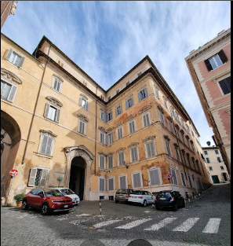
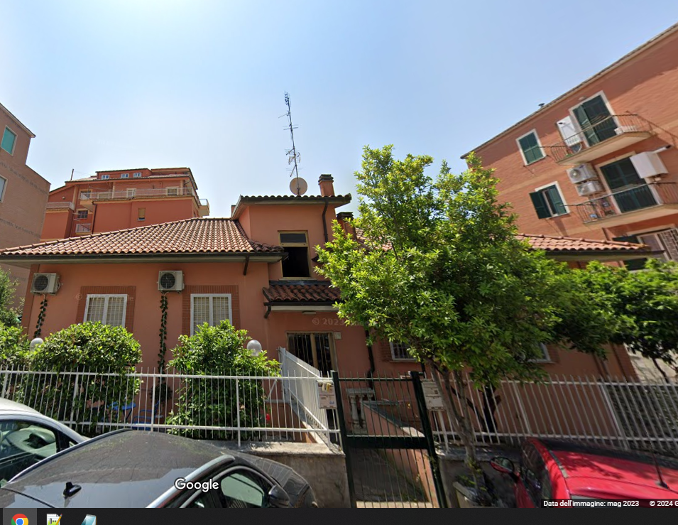

Roma, 24 Maggio 2023 - Una serie di tragici eventi ha colpito il cuore della Capitale nella notte, con tre distinte esplosioni che hanno seminato distruzione e lutto.
- - Via dei Villini: Un'esplosione ha devastato un edificio residenziale, lasciando solo macerie. Le indagini preliminari indicano un possibile malfunzionamento dell'impianto di incenerimento di uno studio di medicina legale vicino come causa dell'incidente.
- - Via Agenore Zeri: La quiete di Via Agenore Zeri è stata interrotta da un'esplosione che ha distrutto un appartamento.
Le autorità hanno appurato l'ipotesi che l'autobus Atac in fiamme possa aver innescato l'esplosione dopo essersi mosso lungo la strada in pendenza, a causa di un freno a mano difettoso, fino a fermarsi sotto il civico 27, dove si sospetta la presenza di gas dentro l'appartamento.
- - Palazzo del Grillo: Un altro grave incidente ha visto il Palazzo del Grillo, un edificio storico, essere completamente distrutto da un'esplosione.
I soccorritori hanno scavato tra le rovine per ore, e in una svolta inaspettata, una donna è stata trovata illesa ma confusa.
Le indagini sono in corso per stabilire la sua identità e l'origine dell'esplosione.
In risposta a queste catastrofi, è stata attivata una vasta operazione di soccorso che coinvolge vigili del fuoco, polizia, protezione civile e personale medico.
Investigatori stanno collaborando per determinare le cause degli incidenti, escludendo al momento ipotesi di atti criminali o terroristici.
Ulteriori Sviluppi: Le autorità hanno confermato che non ci sono stati segnali di attività sospette prima delle esplosioni.
Esperti di sicurezza urbana e ingegneri strutturali sono stati chiamati a valutare l'integrità degli edifici circostanti e a implementare misure preventive per evitare futuri incidenti.

